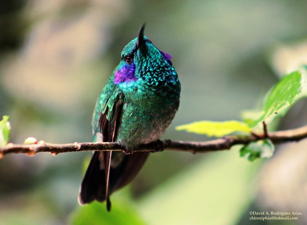
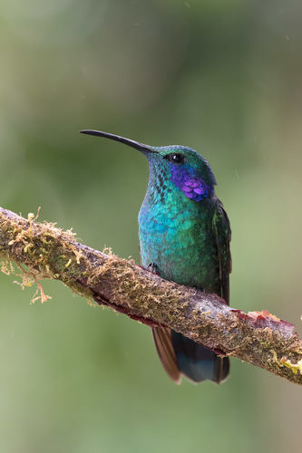
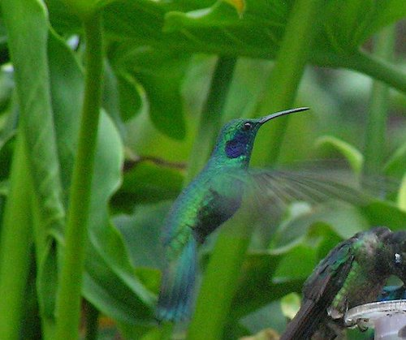
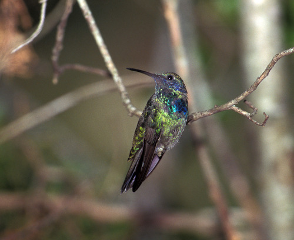

Colibrí orejas violetas




Resumen
El colibrí oreja violeta o colibrí orejiazul (Colibri thalassinus) es una especie de ave apodiforme de la familia Trochilidae que vive en las tierras altas, desde la parte central de México hasta el oeste de Panamá y, en la región de Los Andes, desde el norte de Venezuela hasta Bolivia. Es una ave migratoria que llega hasta Estados Unidos e incluso Canadá. Su hábitat son los campos con árboles y matorrales, entre los 600 y los...
Nombre científico
Colibri thalassinus
Diagnostic description
10.5 cm.; 5 g.. Es de tamaño mediano; es verde casi completo con una faja conspícua en la cola. El pico es fino, entre recto y ligeramente curvado hacia abajo. MACHO ADULTO: en gran parte verde brillante más o menos claro; la garganta y el pecho es verde resplandeciente, con un tinte azul en el pecho; con una mancha violeta ancha desde debajo del ojo a través de los auriculares; con una faja subterminal ancha y negro azulado enla cola. HEMBRA: con el verde resplandeciente restringido a la garganta; el pecho es más opaco y bronceado. El pico y las patas son de color negro. JUVENILES: la coronilla, la parte de atrás del cuello y la rabadilla con bordes rufo opaco; sin verde resplandeciente por debajo y con las plumas de la región superior con bordes angostos anteados.